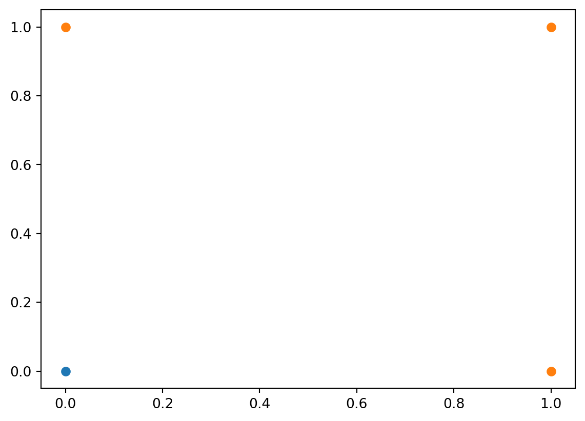
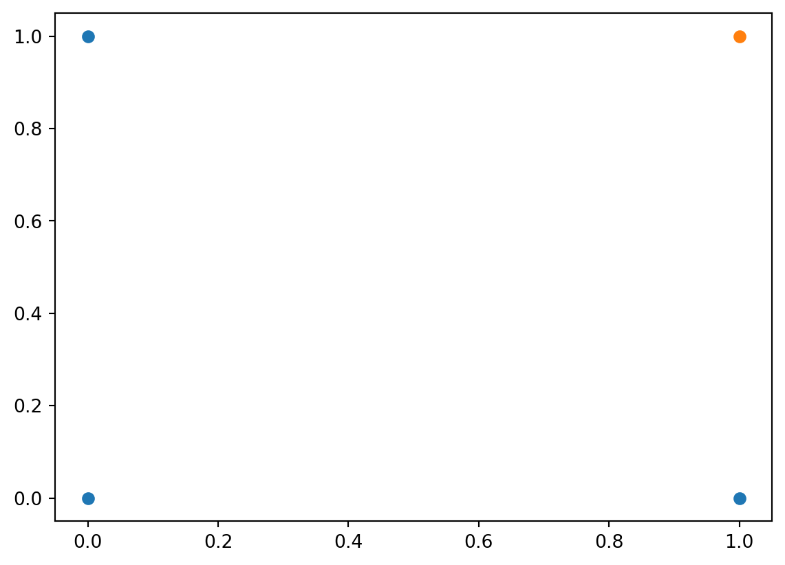
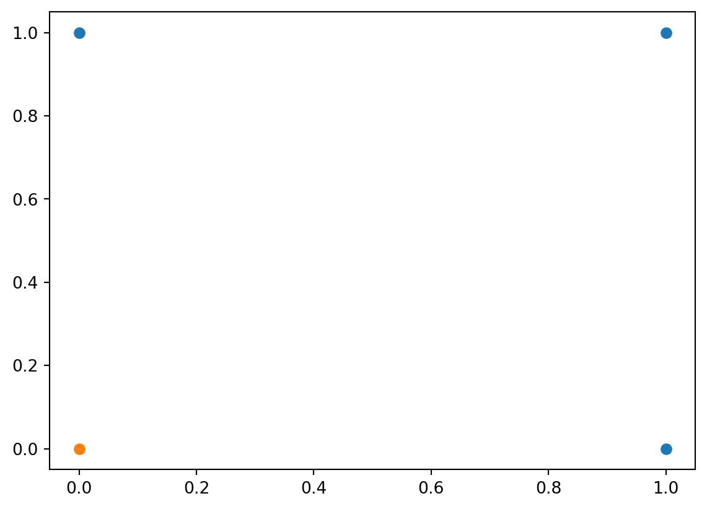
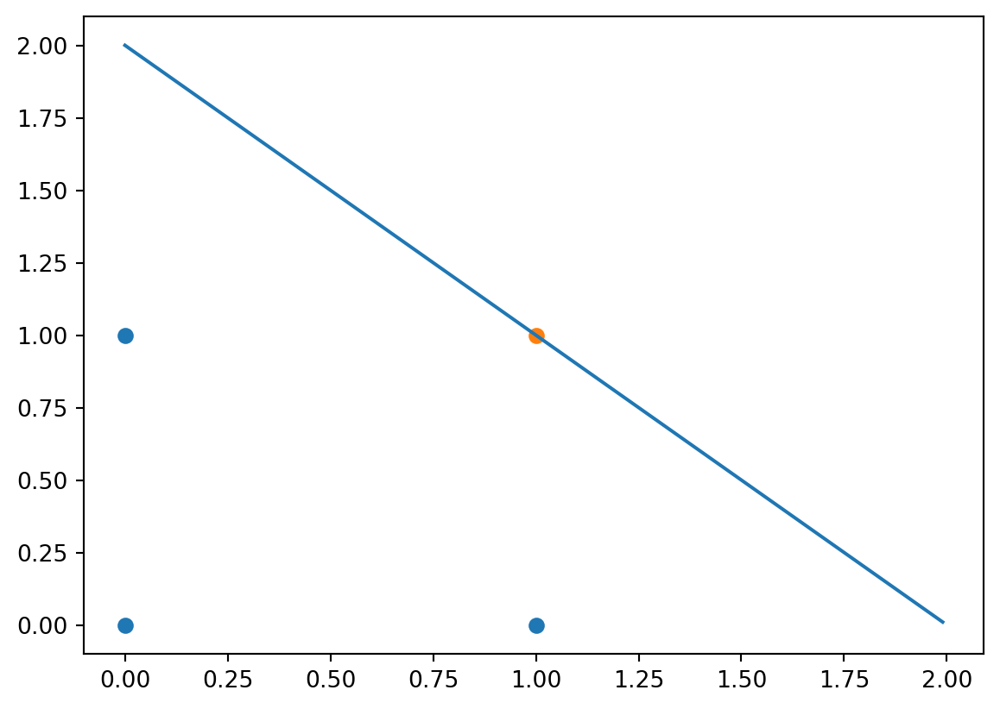
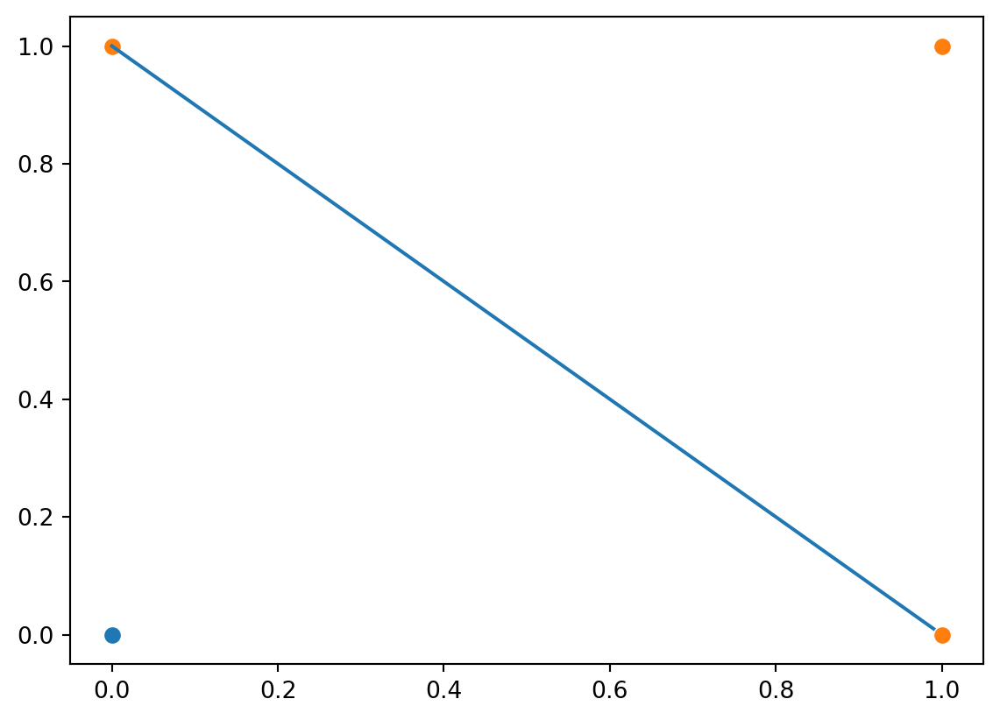

import torch
def McCullochPittsNeuron(x, N, theta):
val = torch.sum(x)
if (val >= theta):
if (torch.sum(torch.index_select(x, 0, N)) == 0):
return 1
return 01 The McCulloch-Pitts Neuron
The McCulloch-Pitts (MP) neuron is a formal model attempting to imitate select behaviour of the biological neuron: excitatory and inhibitory inputs, thresholding behaviour, a single excitatory state, … (McCulloch and Pitts 1943). It is a binary classifier.
1.1 A basic mathematical formulation
Let \(f_{\theta, N}\) be a boolean function (Section 6.1) where \(\theta\) is a non-negative real constant called the threshold and \(N\) is the set of indices (of the input binary tuple) corresponding to inhibitory inputs. We define \(f_{\theta, N}\) in the following manner, \[ f_{\theta, N}(\textbf{x}) = \begin{cases} 1 \text{ if } \sum\limits_{i = 1}^n x_i \geq \theta \text { and } x_i = 0 \;\forall\; i \in N \\ 0 \text{ if } \sum\limits_{i = 1}^n x_i < \theta \text{ or } \;\exists\; i \in N \text{ s.t } x_i = 1 \end{cases} \]
here \(\textbf{x}\) is an input boolean tuple and \(x_i\) is the \(i^{th}\) element of \(\textbf{x}\).
Below is an implementation of the McCulloch pitts neuron.
1.2 Fitting some boolean functions
The MP Neuron can be thought of as a boolean function approximator. An MP Neuron can match the truth table of a boolean function (at least partially) by adjusting the values of \(\theta\) and \(N\). The process of finding the values of \(\theta\) and \(N\) that result in the best match is called fitting.
import itertools
from matplotlib import pyplot as plt
def MPFunction(inp, N, theta):
y = []
for x in inp:
y.append(McCullochPittsNeuron(x, torch.tensor(N, dtype=torch.int32), theta))
return y
def plot_MPFunction(theta, N = ()):
inputs = torch.tensor(list(itertools.product((0, 1), repeat = 2)), dtype = torch.int32)
outputs = torch.tensor(MPFunction(inputs, N, theta), dtype = torch.int32)
off_values = inputs[outputs == 0]
on_values = inputs[outputs == 1]
plt.scatter(off_values[:, 0], off_values[:, 1])
plt.scatter(on_values[:, 0], on_values[:, 1])For OR,
plot_MPFunction(1) # theta = 1 for OR
plt.show()
For AND,
plot_MPFunction(2) # theta = 2 for AND
plt.show()
For NAND,
plot_MPFunction(0, (0, 1))
plt.show()
There are many boolean functions which the MP Neuron cannot fit.
1.2.1 A systematic method to fit
You must also prove that this method is definately the most effecient way to do things.
1.3 Geometric interpretation
The geometrical interpretation of the MP Neuron can be found by looking at it’s decision boundary. The decision boundary in the case where \(N=\phi\) is given by the equation, \[ \sum\limits_{i = 1}^n x_i = \theta \]
this is nothing but a straight line in the cartesian plane when \(n = 2\). Below is a plot of thE decision boundary when trying to fit the AND and OR function.
plot_MPFunction(2)
line_xs = torch.arange(0, 200)/100
line_ys = 2 - line_xs
plt.plot(line_xs, line_ys)
plt.show()
plot_MPFunction(1)
line_xs = torch.arange(0, 100)/100
line_ys = 1 - line_xs
plt.plot(line_xs, line_ys)
plt.show()

By adjusting the value of \(\theta\) we can only change the perpendicular distance between the linear decision boundary and the origin. However, if \(N\neq\phi\) then the decision boundary becomes non-linear.
1.4 Limitations
- In many practical applications, relevant information will often be non-boolean.
- Not all inputs have the same importance in making a decision
- Cannot fit functions which are not linearly seperable.